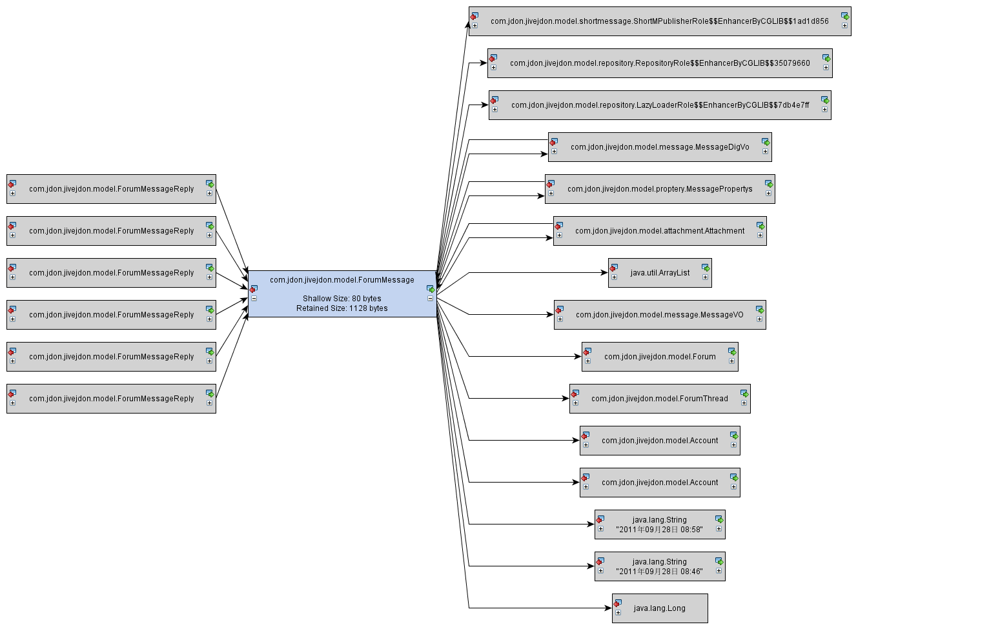

Heap walker - References
Session:
Apache Tomcat 6.x on localhost
Time of export:
Wednesday, September 28, 2011 9:00:47 AM CST
JVM time:
18:09
Current object set:
1 instance of com.jdon.jivejdon.model.ForumMessage
Selection steps:
2 selection steps, 80 bytes shallow size
